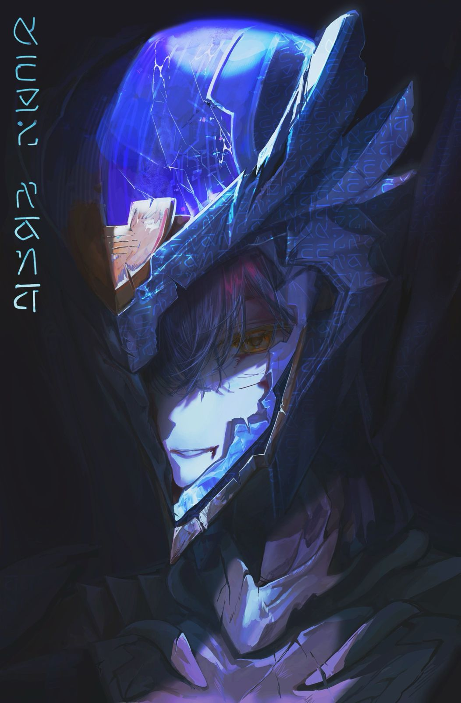
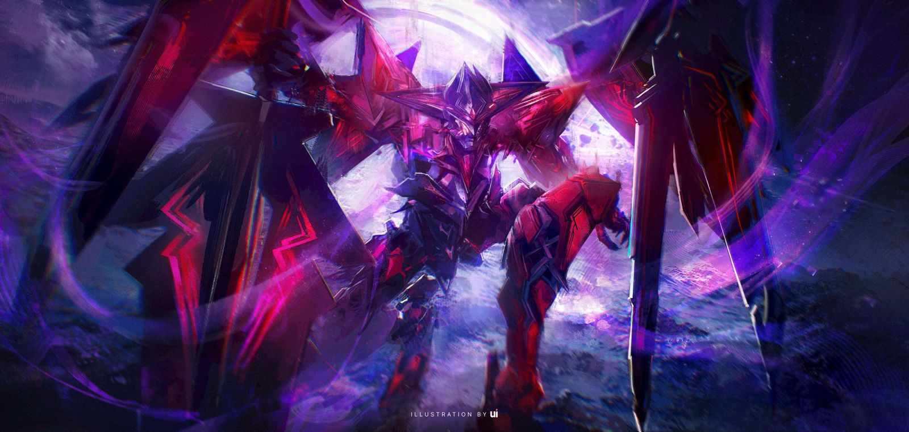
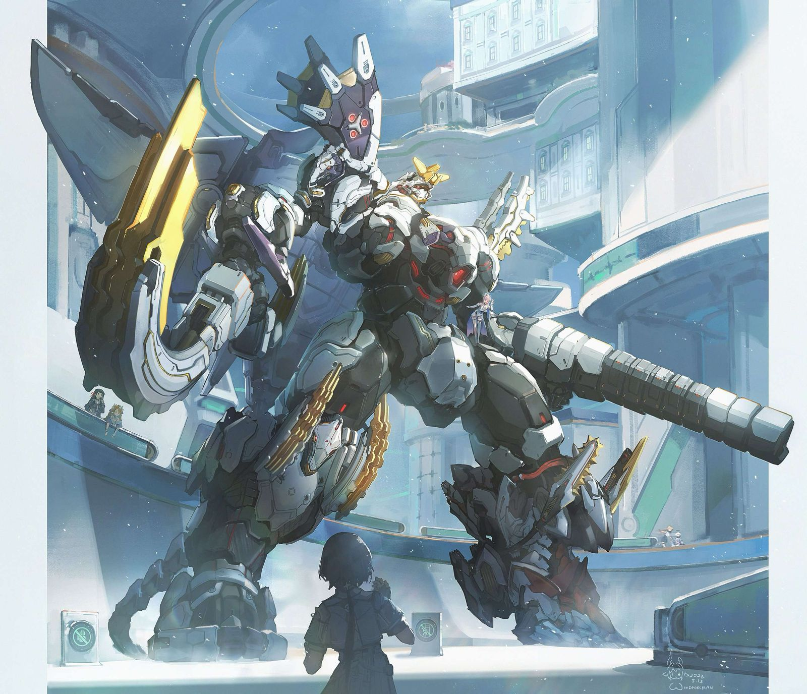

Product - 1

The forgotten memories of the faraway traveler lost in space, after so long it had been corrupted by the void yet now it's only desire is to go home.
< Please look around for anything that you may be interested in >

The forgotten memories of the faraway traveler lost in space, after so long it had been corrupted by the void yet now it's only desire is to go home.

A Vessel that seeks out to devour everything in its path, it will not stop until all things in the universe is gone. The faction in the north has sealed it beyond the gates however it is inevitable for it will return. It had consumed an Exostrider before and using it's body, it erases the people it was supposed to protect.

An amalgation of multiple swarms of mechanoids, it was created by the students of star torch academy, it is a symbol of their passion and the representation of their fighting spirit. Though it is not enough to fight against the vast expance of void, this spark will light the fire for the future.